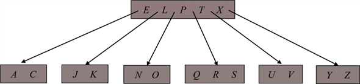
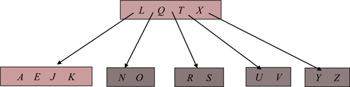
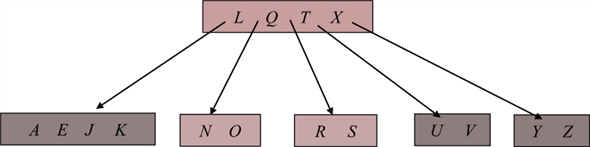
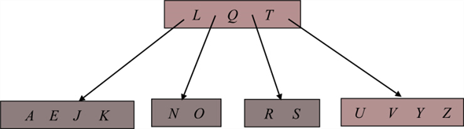

Delete a key from B-tree
The minimum degree for B-tree is t=3, so a node cannot have less than 2 keys.
Initial tree:

C deleted: case 3a
The node C can be deleted by merging the siblings and moving a key E from the root x.ci

P deleted: case 2b
Since sibling that precedes P has less than t keys and sibling that follows P has t keys, replace the P’s position by the key Q that is the succor of P.

V deleted: case 3a
The node V can be deleted by merging the siblings and moving a key X from the root x.ci

B-Tree deletion is the process of deleting the node from binary tree. Deletion of key may be leaf node or internal node of tree.
• If key is deleted from internal node then it required to rearrange the children of that particular node.
• For better understanding the whole algorithm is divided into three cases, according to the node that is deleted from the tree.
Following Pseudo code is used for B-TREE DELETION.
B-Tree-Delete (T, k)
// store the root of tree into variable b
1. b = root[T]
//find the key k which user want to delete
2. B-Tree-Delete-key(b, k)
// if key is not leaf node
3. if n[b]=0 and not leaf[b]
//copy the index of key into root of tree.
4. root[T]= c1[b]
//deallocate the key
5. De-Allocate-node(b)
Consider the three possible cases to remove a node from B-Tree. Assume k be the key to be deleted and j be the node that containing the key value.
Case 1:
If k is the key in node j and j is the leaf node then apply the following procedure to delete the node.
B-Tree-Delete-key (j, k)
//start traversing from index i.
1 i = 1
//search the key for deletion
2 while i <= n[j] and k > keyi[j]
// increment the key value by 1
3 do i=i+1
// if statement is used to perform the action if key k is found
4 if i<=n[x] and k=keyi[j] and leaf[j]
//simply delete the key
5 Disk-Write(j)
6 return
Case 2:
• If k is the key in node j and j is an internal node then there are three possible cases to delete the node.
• In the following algorithm check the minimum key for deletion.
// check the value of index i and key value
7 if i<=n[j] and k=keyi[j]
//traverse the node in tree.
8 then Disk-Read(ci[j])
//when if statement is false then store the index number of node into variable y.
9 y = ci[j]
//if node of y is greater or equal then find the minimum key t
10 if n[y] >= t
//store the minimum key
11 then a=keyn[y][y]
Case 2a:
If the child y of node a having at least t keys, then find the predecessor key k’ in the sub tree. Delete k’ and replace k with k’ in a.
12 B-Tree-Delete-key (y, a)
//find the minimum key j of node a
13 keys[j] = a
//save the value of minimum key
14 Disk-Write(j)
15 return
//traverse all internal node of child node y
16 Disk-Read(ci+1[j])
//copy the content into variable z
17 z = ci+1[j]
Case 2b:
If the child m that follows key k have at least t key, then find the successor key k’ in the sub tree. Delete k’ and replace k with k’ in a.
//if node of m is greater or equal then find the minimum key t
18 if n[m] >= t
//find the minimum key of node m
19 a=key1[m]
//delete the key node.
20 B-Tree-Delete-key (m, a)
//copy the key value.
21 keyi[j] = a
22 Disk-Write(j)
23 return
If both child y and m have t−1 keys then merge all key k and m into y so y contain 2t-1 keys and subsequently delete each key.
//copy the key value of m into y
24 keyt[y] = keyi[m]
//for loop is used to perform the operation till the key value
25 for j = i to n[j]-1
// copy the key value of index j+1
26 keyj[a] = keyj+1[a]
27 cj+1[a] = cj+2[a]
28 n[a] = n[a]-1
29 Disk-Write(a)
30 for j = t+1 to 2t-1
31 do keyj[y] = keyj-t[z]
32 cj[y] = cj-t[z]
33 c2t[y] = ct[z]
34 n[y]=2t-1
35 Disk-Write(y)
36 B-Tree-Delete-key (y, a)
37 return
Case 3:
• If key node is not present in internal node a it means the root of subtree contain the key k .
• If the root of tree have t-1 keys but there sibling have t keys then traverse the left and right sibling of tree for deletion the key.
• If the root of tree have t-1 keys and there sibling also have t-1 keys then traverse the left and right sibling of tree for deletion the key.
// if the key is not present in leaf node
38 if not leaf[a]
//find the root of minimum key k.
39 s = ci[a]
//traverse the subtree to find minimum key
40 Disk-Read(s)
// if the root has t-1 key
41 if n[s] = t-1
//travrse the child of rooted tree.
42 Disk-Read(ci-1[a])
//if the sibling have t key
43 if n[ci-1[a]] > t-1
//increse the key value of root by 1
44 n[s] = n[s]+1
//for loop is used to travrse all node of subtree.
45 for j=n[s] downto 2
//move the key value of j-1 location.
46 keyj[s] = keyj-1[s]
//move the key value of j location
47 cj+1[s] = cj[s]
//travrse the appropriate children of node a in the tree.
48 Disk-Write(a)
49 Disk-Write(ci-1[a])
50 Disk-Write(s)
Analysis of Algorithm:
• In the above algorithm three different cases is used to delete the node from tree.
• If the node is the leaf node then directly delete the key value k from tree.
• When a key node present in internal node then it required rearranging the children of that particular node to go one step up to rearrange the node by its predecessor or successor.
• If node that is deleted is internal node then the key value k is deleted according to the case 2 of algorithm.
• If the key k is not presented in internal node then the node is deleted according to the case 3 of algorithm.
Hence, the time complexity of algorithm will be .